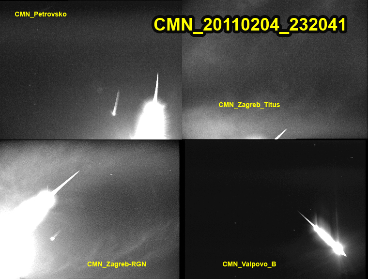
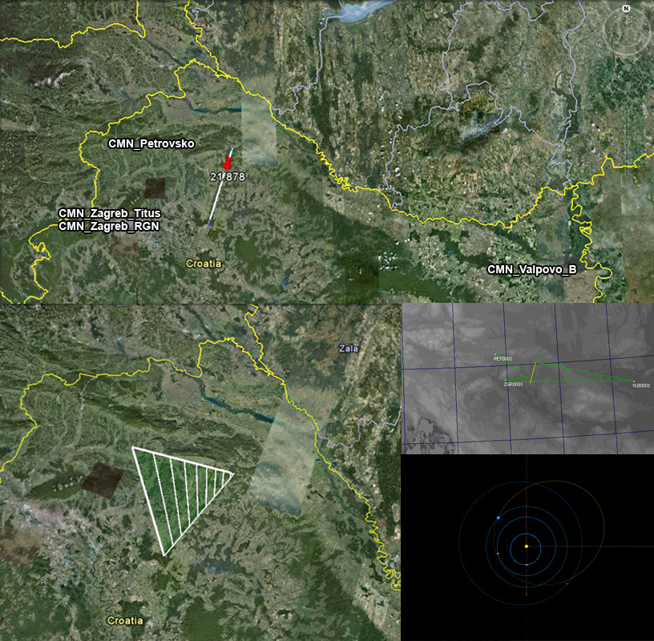
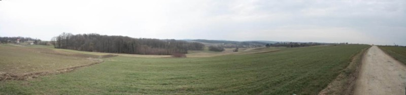
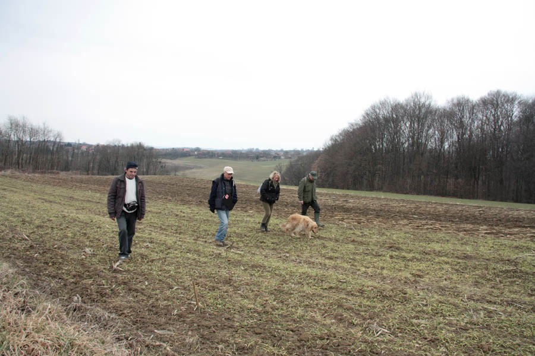
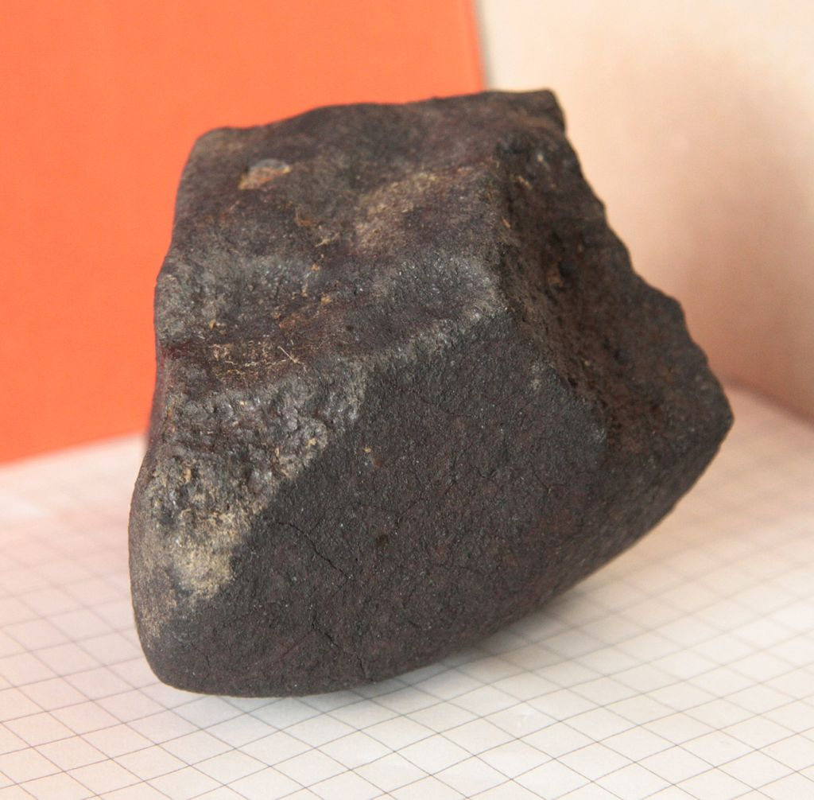

On the night of february 4-5, 2011, several CMN cameras captured a very bright bolide. The bolide was also captured by Slovenian cameras (communication by Javor Kac). Efforts to determine its orbit and location of a possible fall started immediately.

Atmospheric trajectory of bolide (top), some details of trajectory triangulation, and meteoride orbit (bottom right) determined from the data.

After the preliminary calculations of dark flight were done, the search for the meteorite started on february, 19th, 2011. The search area is partially cultivated, with intermixed fields, vineyards and forrest.

A part of field team on work.

On the second day of field search, on february 20th, the first piece of the meteorite was recovered on the fields near the town of Križevci. It seems to be an ordinary chondrite, with a mass of about 0,3 kg. The search continues, and up to date, no more meteorite pieces are found.
The members of search teams, arranged alfabetically for ease of book-keeping (the list will be updated as the search continues): Željko Andreiæ ,Maja Baksa, Hrvoje Belani, Tanja Devèiæ, Damir Devèiæ, Nataša Dimitrijeviæ, Andrej Dundoviæ, Paula Hrpalo, Milivoj Hudoletnjak, Tomislav Jakopèiæ, Sonja Janekoviæ, Gordana Juran-Ratkoviæ and child, Darko Kišur, Ivica Kocijanèiæ, Vatroslav Kokor, Korado Korleviæ, Mladen Korleviæ, Ivan Krevatin, Ivan Kukuljan, Mirela Kurnik, Arnel Labinjan, Goran Laljiæ, Spomenka Lazar, Tania Lugomer-Pomper, Goran Ljaljiæ, Antun Martinoviæ, Mario Matešiæ, Ratko Matiæ, Josip Mesaroš, Elena Mladošiæ, Krešimir Pavliæ, Alan Pevec, Robert Pittner and two children, Božidar Poljak, Josip Previæ, Branimir Ratkoviæ, Indramani Sharma, Ivica Skokiæ, Marko Šimac, Marko Šoštariæ, Boris Štromar, Una Štromar, Irma Tripar, Krunoslav Vardijan, Ratko Višak, Dunja Županiæ
Last Revised: 22.3.2011.